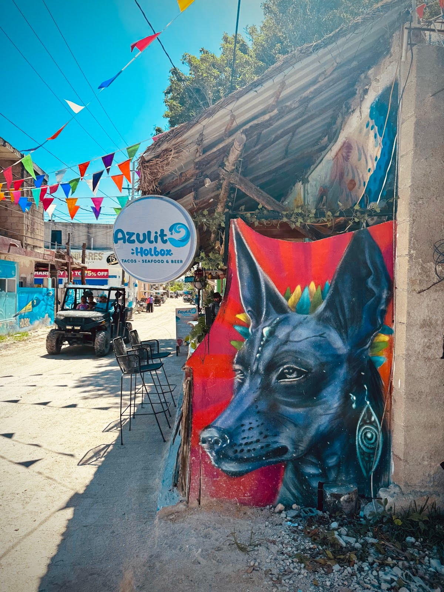
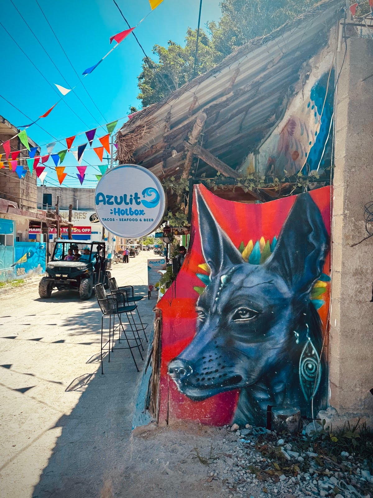
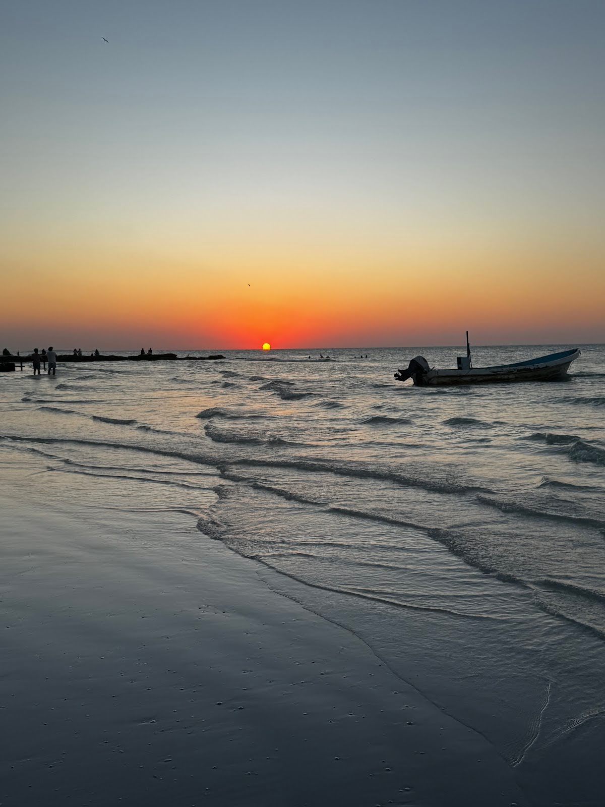
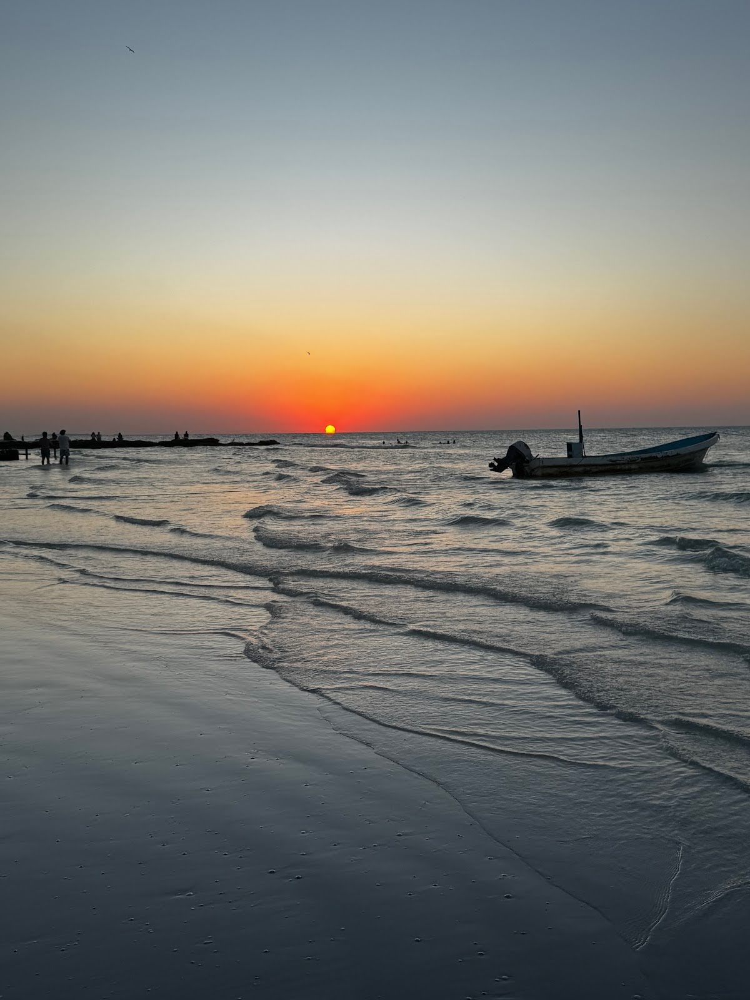

Your Week in Holbox
Every day of Soul Strong is designed with balance in mind — a mix of movement, mindfulness, and meaningful downtime. You’ll challenge your body, nourish your mind, and still have plenty of space to explore, connect, and just be. All activities, workouts, and excursions are completely optional. This is your vacation to do whatever you feel called to.
Arrival in Cancún
Guests arrive in Cancún and check into our group hotel for a relaxed evening before heading to the island. It’s a chance to unwind from travel, connect with fellow retreat guests, and ease into vacation mode.
Welcome to Holbox
- Quick breakfast at the hotel
- ADO bus from Cancún to Chiquilá
- Scenic ferry ride to Holbox Island
- Luggage drop off and check-in at Blue Holbox boutique hotel
- Lunch at Blue Holbox
- Island walk with Adelade — get your bearings, explore colourful murals and beach paths, and soak in the laid-back charm of town.
- Sunset yoga & intention-setting with Holbox Yoga
- Evening dinner with the group at a local favourite, or do your own thing!
- Bioluminescence experience — swim or paddle through glowing waters under the stars
 

Strength & Flow
- Beach Workout with Holbox Bootcamp
- Post-workout yoga flow to stretch, reset, and reconnect with your body
- Leisurely breakfast and downtime — dip in the Yucatán Sea, relax in the hammocks, or explore the island
- Free time for beach lounging, exploring local shops, or grabbing fresh smoothies
- Optional lunch at Blue Holbox
- Private training session with Adelade
- Relaxing massage on the beach
- Zumba in the city centre — move, dance, and laugh with the local community
- Group taco tour - taste the island’s most authentic tacos at these hidden gem taco stands
Explore the Islands
- Sunrise swim
- Light pre-workout snack at the hotel
- Beach workout with Adelade
- Yoga flow with Holbox Yoga
- Breakfast at the hotel
- 3 Islands Tour — explore nearby islets, swim in crystal-clear water, and keep an eye out for the island’s incredible bird life
- Group lunch at a Cenote
- Return for free time for rest or massages
- Zumba
- Group dinner
- Live music and dancing

Flamingos!
- Quick meetup and light pre-workout snack at the hotel
- Beach workout with Holbox Bootcamp
- Yoga flow
- Breakfast at the hotel
- Bike ride to Cayo Cocos beach where the flamingos are known to be hanging out
- Cayo Cocos beach time to read, relax, grab a bite and/or a drink
- Return bikes and head back to the hotel to prepare for the evening
- Sunset Kayak — paddle out as the sky turns gold and pink, and take in the magic of a Holbox sunset from the water
- Dinner
 

*Please note: this is a sample 4 day itinerary — exact timing and activities may vary depending on the group, weather, and island rhythm. Note we will save our sound bath for the last night but there will be options to attend others during the week.
Memories from Holbox
Glimpses of island life, movement, and connection

Ready to Join Us?
Limited spots available. Early-bird pricing ends January 31, 2026.
Reserve Your Spot